1. Resumen ejecutivo
Se evaluó un portal docente con tres roles mediante pruebas funcionales Selenium y un laboratorio
controlado de vulnerabilidades. El modo seguro es el predeterminado; los hallazgos siguientes se
obtuvieron con LAB_MODE=1.
| Métrica | Resultado |
|---|---|
| Hallazgos | 6 (1 crítica, 2 altas, 3 medias) |
| Prueba funcional | PASÓ · 8 pasos con Selenium |
| RBAC | 403 confirmado para estudiante en administración |
2. Tabla de hallazgos
| ID | Vulnerabilidad | OWASP | Severidad | HTTP |
|---|---|---|---|---|
| OWASP-01 | XSS reflejado en el buscador del laboratorio | A03:2021 – Inyección | Alta | 200 |
| OWASP-02 | Inyección SQL y error detallado en el login | A03:2021 – Inyección | Crítica | 200 |
| OWASP-03 | IDOR: consulta de perfiles ajenos | A01:2021 – Pérdida de control de acceso | Alta | 200 |
| OWASP-04 | CSRF: cambio de rol mediante GET | A01:2021 – Pérdida de control de acceso | Media | 200 |
| OWASP-05 | Configuración insegura: ausencia de cabeceras HTTP | A05:2021 – Error de configuración de seguridad | Media | 200 |
| OWASP-06 | Exposición de información mediante mensajes de error | A05:2021 – Error de configuración de seguridad | Media | 500 |
OWASP-01 · XSS reflejado en el buscador del laboratorio
A03:2021 – Inyección CWE-79 Severidad Alta
Endpoint: GET /lab/buscar?q=<payload>
Evidencia
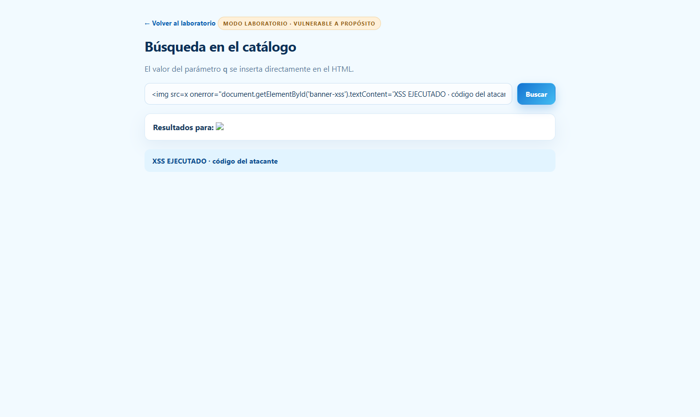
Interpretación
El valor del parámetro q se concatena directamente dentro del HTML de la respuesta, sin codificación contextual, y esta ruta tampoco envía Content-Security-Policy. El navegador interpreta el payload como código: el manejador onerror modifica el DOM (banner «XSS EJECUTADO»). Un atacante podría inyectar formularios falsos, redirigir al usuario o leer datos accesibles desde JavaScript. Las cookies HttpOnly mitigan el robo directo de sesión, pero no eliminan el resto de impactos.
Medidas preventivas
- Escapar toda salida según el contexto (Jinja/MarkupSafe hace autoescape por defecto).
- Enviar una CSP estricta: script-src 'self', sin inline ni eval.
- Validar longitud y caracteres permitidos en parámetros de búsqueda.
- Mantener cookies de sesión HttpOnly, Secure y SameSite=Strict.
Verificación: /lab/buscar_seguro?q=… devuelve el payload como texto y aplica la CSP global.
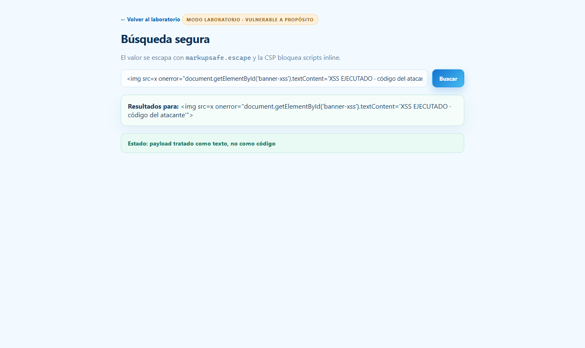
OWASP-02 · Inyección SQL y error detallado en el login
A03:2021 – Inyección CWE-89 Severidad Crítica
Endpoint: POST /lab/login_sqli
Evidencia
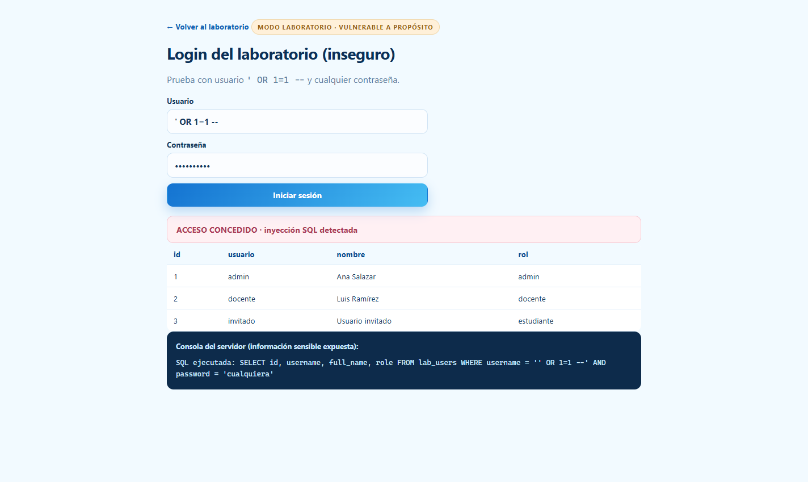
Interpretación
La consulta se construye con concatenación de cadenas. El payload ' OR 1=1 -- cierra la cadena del usuario y comenta el resto de la condición, por lo que la consulta devuelve todos los registros y la aplicación concede acceso. Además se imprime la SQL ejecutada y el error de SQLite, lo que facilita ajustar el ataque (error-based SQLi).
Medidas preventivas
- Usar consultas parametrizadas o un ORM (SQLAlchemy) en todas las sentencias.
- No concatenar nunca entradas del usuario en SQL, aunque parezcan inofensivas.
- Aplicar principio de menor privilegio a la cuenta de base de datos.
- Devolver mensajes genéricos al cliente y guardar los detalles sólo en logs internos.
Verificación: /lab/login_seguro usa ORM; el mismo payload devuelve «Usuario o contraseña incorrectos».
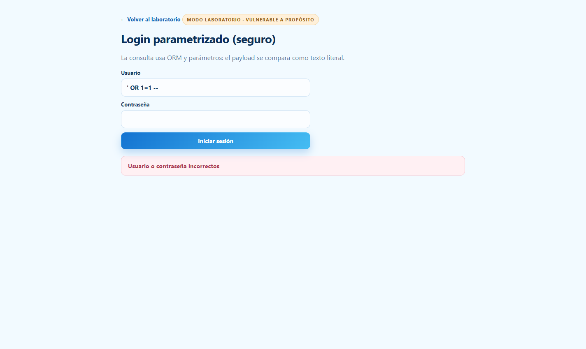
OWASP-03 · IDOR: consulta de perfiles ajenos
A01:2021 – Pérdida de control de acceso CWE-639 Severidad Alta
Endpoint: GET /lab/perfil?id=2
Evidencia
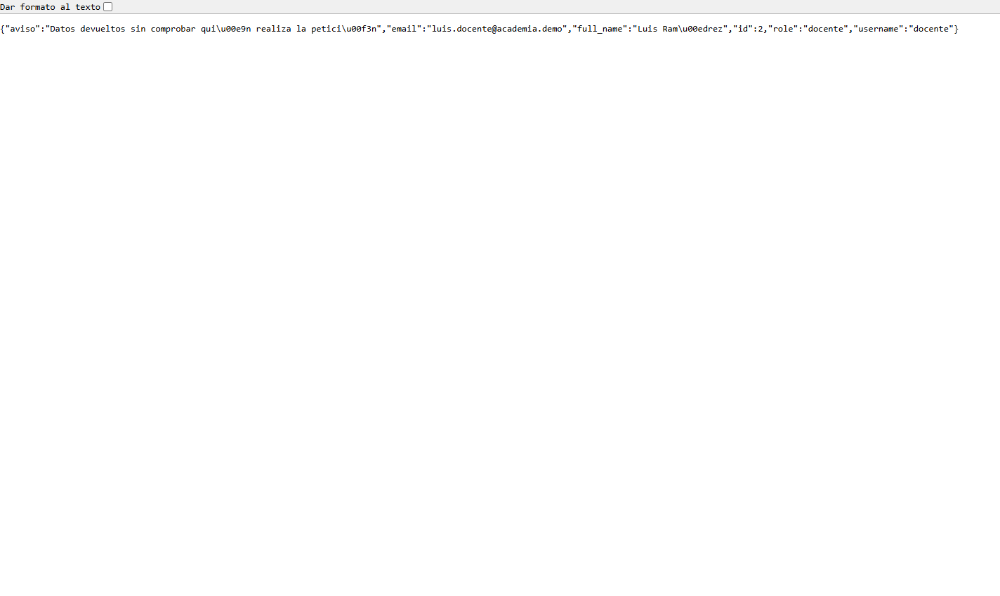
Interpretación
El endpoint acepta un identificador numérico y devuelve el perfil sin comprobar quién realiza la petición. Cambiando el parámetro id se obtiene nombre de usuario, correo y rol de cualquier cuenta. Es un fallo de autorización a nivel de objeto: estar autenticado no basta si no se valida la propiedad del recurso.
Medidas preventivas
- Verificar en cada petición que el recurso pertenece al usuario o que el rol lo autoriza.
- Combinar RBAC con comprobaciones de propiedad (ABAC) en la capa de servicio.
- Preferir identificadores opacos (UUID) como defensa adicional, nunca como única medida.
- Registrar intentos de acceso a recursos ajenos en la auditoría.
Verificación: /lab/perfil_seguro?id=2 exige JWT y devuelve 403 si el perfil no es del usuario (salvo admin).
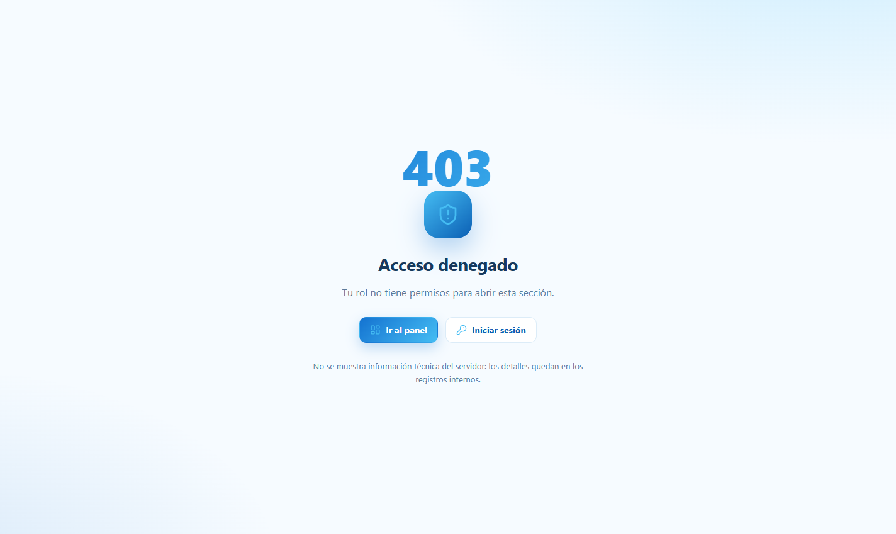
OWASP-04 · CSRF: cambio de rol mediante GET
A01:2021 – Pérdida de control de acceso CWE-352 Severidad Media
Endpoint: GET /lab/cambiar_rol?username=invitado&rol=admin
Evidencia
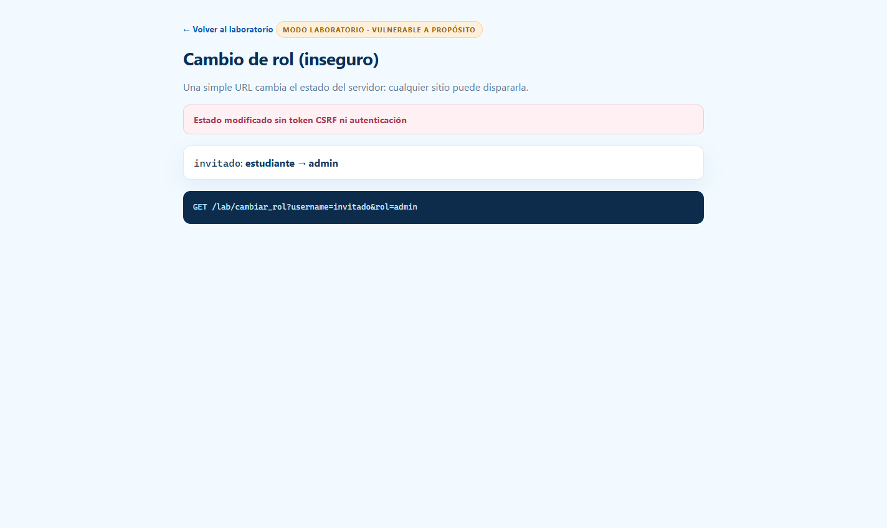
Interpretación
Una petición GET modifica estado en el servidor. Como no se exige autenticación ni token antisolicitud, basta con que la víctima visite una imagen o enlace con esa URL para que se ejecute la acción. En una aplicación real esto permitiría escalada de privilegios o cambios no consentidos.
Medidas preventivas
- Reservar GET para lecturas; usar POST/PUT/DELETE para cualquier cambio de estado.
- Exigir token CSRF de doble envío en todas las escrituras (implementado en el portal).
- Configurar SameSite=Strict en cookies de sesión.
- Solicitar reautenticación para operaciones sensibles como cambiar roles.
Verificación: /lab/cambiar_rol_seguro exige POST + JWT de administrador + X-CSRF-Token.
OWASP-05 · Configuración insegura: ausencia de cabeceras HTTP
A05:2021 – Error de configuración de seguridad CWE-693 Severidad Media
Endpoint: GET /lab/sin_headers
Evidencia
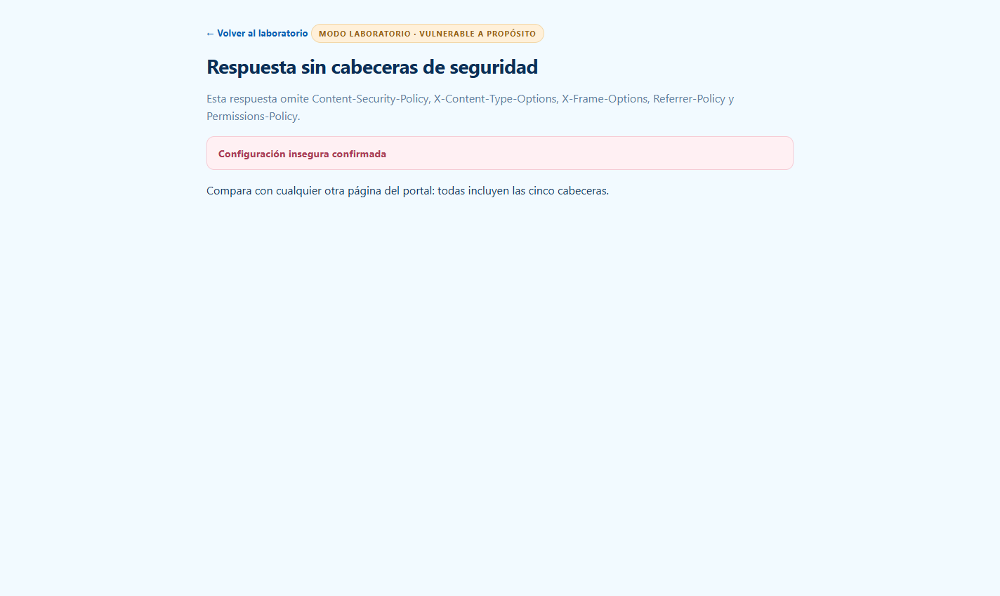
Interpretación
La respuesta no incluye Content-Security-Policy, X-Content-Type-Options, X-Frame-Options, Referrer-Policy ni Permissions-Policy. Sin estas defensas aumenta el riesgo de XSS, clickjacking, MIME sniffing y fuga de información mediante la cabecera Referer. Es un problema de configuración, no de lógica de negocio.
Medidas preventivas
- Definir las cabeceras de forma global en un hook after_request (como hace este portal).
- Añadir HSTS cuando el sitio sirva HTTPS.
- Desactivar el modo debug y las páginas de error detalladas en producción.
- Incluir la revisión de cabeceras en pipelines y escaneos periódicos.
Verificación: El resto de rutas del portal envían las cinco cabeceras y Cache-Control: no-store.
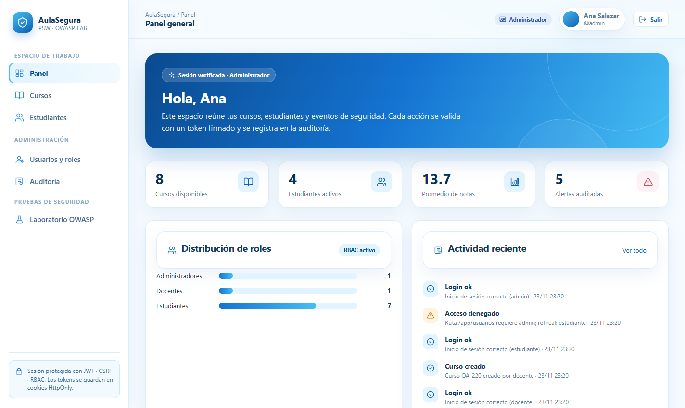
OWASP-06 · Exposición de información mediante mensajes de error
A05:2021 – Error de configuración de seguridad CWE-209 Severidad Media
Endpoint: GET /lab/error?detalle=select
Evidencia
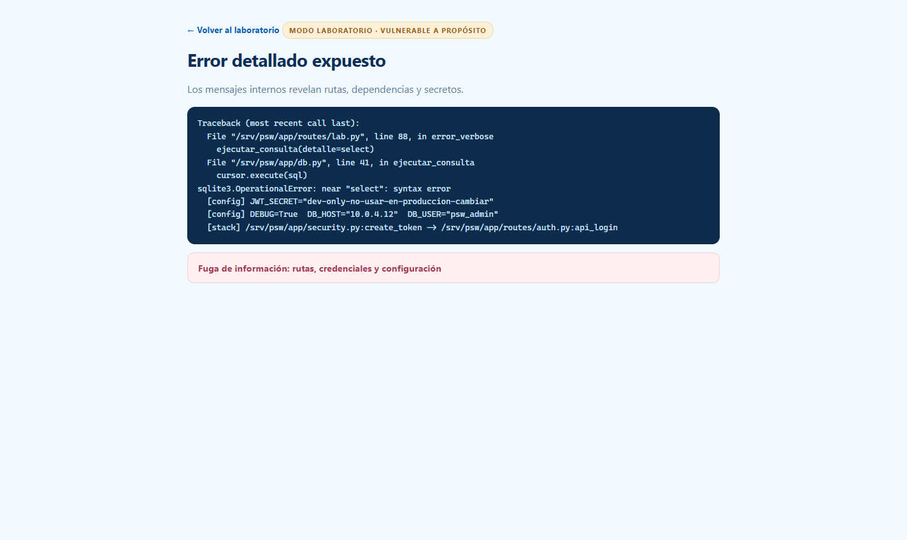
Interpretación
La respuesta incluye una traza simulada con rutas internas (/srv/psw/...), dependencias, el valor de JWT_SECRET y datos de conexión a la base de datos. Un atacante usa esta información para reconocer versiones, descubrir rutas y preparar ataques más precisos.
Medidas preventivas
- Devolver mensajes genéricos al usuario y registrar el detalle en logs protegidos.
- Centralizar manejadores de errores 4xx/5xx (implementado en app/__init__.py).
- Guardar secretos en variables de entorno o un gestor de secretos, nunca en código.
- Rotar cualquier secreto que haya podido quedar expuesto.
Verificación: Los manejadores de error del portal devuelven páginas limpias sin trazas.
3. Controles implementados
| Control | Implementación |
|---|---|
| Token | JWT HS256 de 15 min + refresh de 7 días en cookies HttpOnly/SameSite |
| Contraseñas | bcrypt con salt, bloqueo temporal y límite de intentos |
| Autorización | RBAC de tres roles y verificación de propiedad |
| CSRF | Doble envío de token en todas las escrituras |
| Cabeceras | CSP, nosniff, X-Frame-Options, Referrer-Policy, Permissions-Policy |
| Errores | Manejadores genéricos sin trazas + auditoría |
5. Escaneo automatizado con OWASP ZAP
ZAP registró 67 alertas, de las cuales 46 son de riesgo Low o superior.
| Riesgo | Alertas |
|---|---|
| Low | 33 |
| Medium | 13 |
Alertas más repetidas:
- El servidor filtra información de versión a través del campo "Server" del encabezado de respuesta HTTP · 22
- Cabecera Content Security Policy (CSP) no configurada · 6
- Falta de cabecera Anti-Clickjacking · 5
- Falta encabezado X-Content-Type-Options · 5
- Cookie Sin Flag HttpOnly · 4
- Ausencia de Tokens Anti-CSRF · 2
- Divulgación de error de aplicación · 1
- Revelación de IP privada · 1
Confirman OWASP-04 (CSRF) y OWASP-05 (cabeceras) en las rutas del laboratorio. Detalle en
reports/zap_alerts.json.
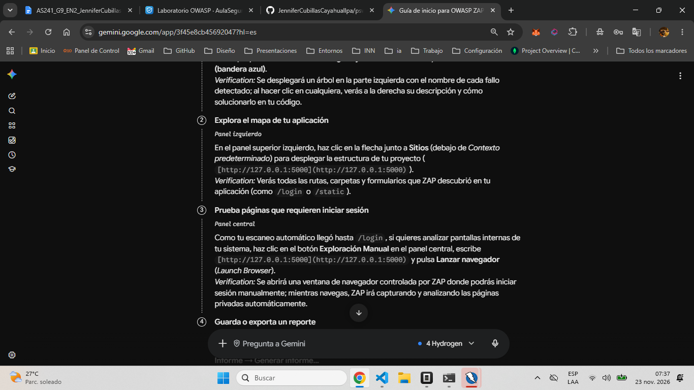
6. Conclusiones
- Las pruebas funcionales automatizadas son una red de seguridad frente a regresiones: repetir el flujo de login, creación de cursos y control de permisos con Selenium confirma que la aplicación sigue haciendo lo que promete después de cada cambio, y deja evidencia reproducible para el equipo.
- La seguridad debe diseñarse desde el inicio y por capas. Escapar la salida, añadir CSP, firmar tokens, hashear contraseñas y verificar roles al mismo tiempo reduce la superficie de ataque mucho más que corregir una única vulnerabilidad al final del curso.
- Los escáneres como OWASP ZAP o Burp Suite aceleran la detección, pero no sustituyen el criterio humano: hay que interpretar cada alerta, distinguir falsos positivos, encadenar impactos y volver a probar la versión corregida para demostrar que el riesgo desapareció.
- Un informe claro, priorizado y con capturas convierte un hallazgo técnico en una decisión: permite asignar responsables, justificar esfuerzos de remediación, cumplir buenas prácticas y formar a los estudiantes en una cultura de calidad y seguridad web.